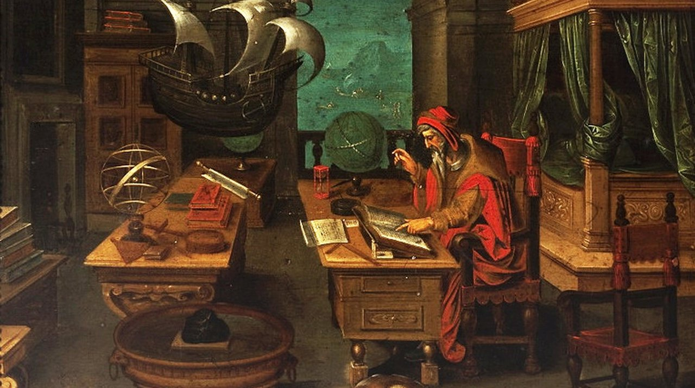

Do Re Mi What Fa Si Ti Doi Nemo Do Re Mi What Fa Si Ti Doi Nemo
E La Yo Na Ti Do Pa Pa Noah Do Re Mi What Fa Si Ti Doi Nemo
No way! Hey Hey, me ok! Do Re Mi What Fa Si Ti Doi Nemo
Let's Study About The Invention Of Compass
Do You Know The Story Behind Invention Of Compass
The compass was invented during the Han Dynasty between the years 300 and 200 B.C.E. The Chinese discovered a material known as lodestone which includes a naturally occurring ore called magnetite. When freely suspended, magnetite is attracted to the Earth’s magnetic North Pole. Soon enough, this realization quickly resulted in the creation of the compass. The compass is a device that allows the user to know precisely which direction they are facing without the need of stars and other physical landmarks. The compass became an essential device throughout the Age of Exploration where numerous European and Asian explorers traveled by ship throughout the Western Hemisphere. The discoveries of new lands paved the way towards globalization and the interconnected world in which we live today. Without the invention of the compass, explorers would not have been able to traverse through the world’s open seas and follow the precise routes established by others. Although the modern day GPS systems make the compass seem obsolete, that is far from being true. A GPS system specifies the location of a person, but not the precise direction in degrees they are facing, thus making the compass a tried and trusted navigational device, even in modern day. The compass has, and continues to be, one of the most significant inventions throughout world history. While Thomas Alva Edison is credited for bulb invention, it is not entirely true. Edison created the first commercially practical incandescent light. But he was not the first person to do so. As per historical records, nearly 20 inventors invented different versions of incandescent bulbs before Edison. The reason that Edison is credited for the invention is that his version was better than other versions. Edison's bulb not only was an effective incandescent material but also had a higher vacuum than others. Edison's bulb invention also had a high resistance that made the distribution of power more economical.
A Brief History of the Compass
Compass is an instrument for navigation and orientation. It has a magnetic needle or a card that can rotate freely, and if positioned horizontally it will align itself with the magnetic field of the Earth and point Magnetic North-South. The First compass was invented in China during the Han Dynasty between the 2nd century BC and 1st century AD, (we don’t know precisely when). At first, it was used for divination, fortune-telling and geomancy, for finding precious gems and in Feng Shui but in time people discovered that it can be used for navigation and orientation. People knew about magnetite even before then, but it took centuries for it to get at least some purpose. Earliest compasses were made of lodestone, a particular form of the mineral magnetite. The first compass was a lump of lodestone that was tied to a rope and left to hang freely. Other were also made from lodestone but were shaped like a spoon or a ladle whose handle was made to point south. Somewhere made to work when left on the ground while other had a plate on which it stood and which had sides of the world marked on it. China military used a compass for navigational orienteering in the 11th century and for naval orienteering in 12th. Compasses were then made of magnetized iron instead of lodestone and were so called “south pointing fish” which was a magnetized iron fish that floated in a bowl of water and pointed south. Later was invented a turtle the compass, which was a type of dry compass. Its main part was a wooden turtle which had lodestone in it which was fixed with wax and had a needle sticking out. Wooden turtle balanced on a bamboo needle, which allowed it to rotate freely and the needle pointed north. In the 12th century compass appeared in Europe. Both types of compass appeared: a floating compass for astronomical purposes and a dry compass for seafaring. It improved sailing which, until then, relied on orientation by the sun or by stars and was limited to sea travel between October and April. Now ships could sail throughout the whole year. Islamic world imported compass during the 13th century and used it for the same purposes as the rest of the world: astronomy and seafaring. They also invented a type of the compass for use in prayers. They made a dry compass for use as a "Qibla (Kabba) indicator" to find the direction to Mecca for their daily prayers.